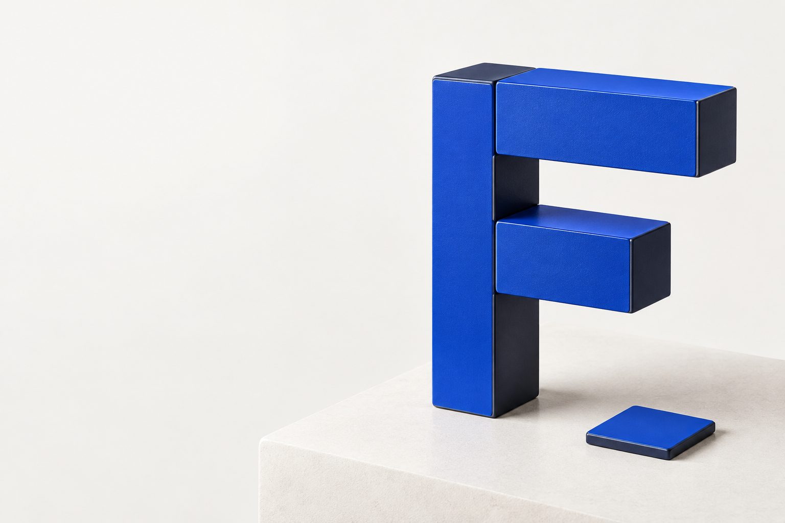

A system of design specialists
From intent
to refinement.
Forma organizes design work across supported assistants, from the first question to the final review.
Explore the system
One starting point.
The right perspective
for each task.
The request sets the direction. Forma brings design specialists together to create, refine and review while preserving the project's brand, technology and decisions.
Shared coordination.
Support that fits the work.
Understand
Read the context and define what matters.
Create
Give intent a considered form.
Refine
Adjust relationships, details and behavior.
Verify
Check the result in its actual context.
Eleven specialties.
One connected
process.
Each specialist has a responsibility. The coordinator selects relevant support without involving the entire family in every adjustment.
Foundations
foundationsColor, typography and spatial relationships.
Interface
interfaceComposition, controls and interaction states.
Product
productFrom tasks to journeys and product direction.
3D objects
objects-3dVolume, materials and purposeful interaction.
Graphs & data
graphs-dataRelationships, structures and information visualization.
Motion
motionGestures, transitions and timed sequences.
Platforms
platformsBehavior suited to each environment.
Brand
brandIdentity, messaging and visual communication.
Reference
referenceObserve, investigate and preserve what matters.
Validation
validationCriteria, evidence and review of the result.
Handoff
handoffSources, components and files for continued work.
One symbol.
Three pieces.
Room to create.
A stem, a long bar and a short bar. The F emerges from the relationship between simple parts, with gaps that reveal its construction.
Precision without rigidity
The pieces share thickness and alignment. Negative space keeps the symbol legible at small sizes.
One signature, many contexts
Use the full brand signature in presentations and the symbol where the name is already established. Preserve the geometry in both versions.
Blue that guides.
Paper that breathes.
A compact palette with clear roles. Blue identifies; ink supports reading; paper creates space.
Forma blue
Brand, accents and links on light surfaces.
Ink
Primary text and the dark version's surface.
Paper
Primary surface and reversed brand on ink.
Light by nature.
Ink on paper. Gray supporting text.
Text accent - #315BE8Dark with breathing room.
Paper on ink. Light gray supporting text.
Text accent - #A8BCFFIn dark mode, the text accent becomes lighter to preserve contrast. The original blue remains part of the identity. This palette belongs to Forma and does not replace the colors of consuming projects.
Recognizable.
Even in a
small space.
Give the brand room to breathe.
Leave clear space around the mark equal to the stem width: 4u. No text, image or other brand should enter this space.
Small, without losing its form.
Recommended minimum: 24 px for the symbol's square canvas. Preserve all three pieces and their gaps. Do not stretch, rotate or add outlines.
From intent
to refinement.